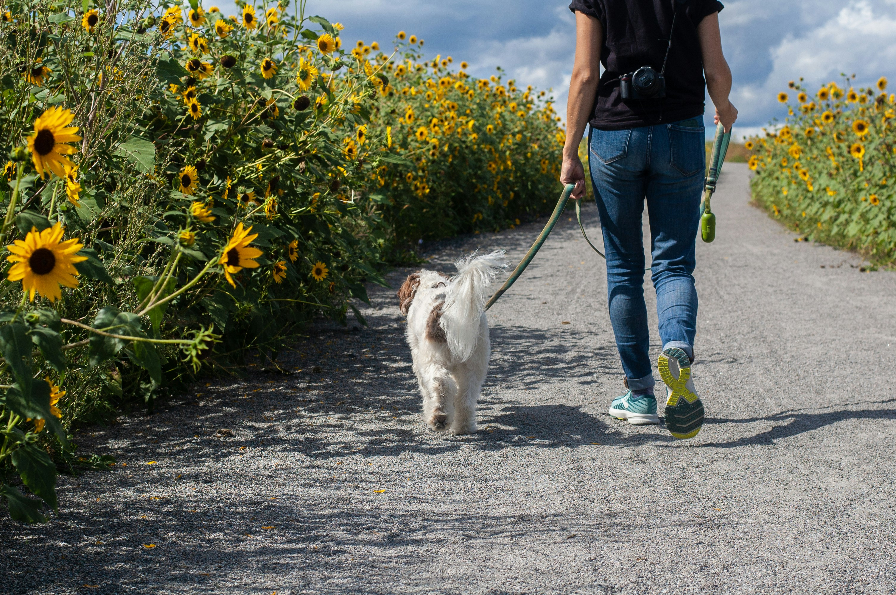

ABOUT KIBB.
KIBB grew from a group of students who enjoyed taking care of animals into an elite team of dog walkers, sitters, trainers, and groomers. We give dogs room to play and care that fits your routine!
Our Story
OUR STORY
Middle Georgia Students opened KIBB in 2026 in an effort to to connect with Macon's local community. As word spread, KIBB grew to offer dog walking, grooming, and supervised daycare.
We still start by getting to know each dog. An energetic puppy learning to walk on a leash needs a different pace than an older dog on their daily stroll. We make time for both.
WHAT WE STAND FOR
-
Safety First
We supervise group play, handle dogs gently, and keep their routines consistent.
-
Genuine Care
We learn each dog's habits and personality, and we treat every pet like family.
-
Exercise and Play
Walks and playtime keep dogs happyn healthy, and ready for a good nap at home!
-
Reliable Updates
We keep owners informed about their dog’s routine and how the visit went.
WHAT WE DO
-
Walks & Daycare
Daily dog walks, full-day supervised daycare, and sitting while you are away.
-
Training
Puppy Foundations, Basic Obedience, and Tricks & Enrichment.
-
Grooming
Baths and brushing, haircuts and trims, and nail trims for dogs of all sizes.
COME SAY HELLO
Check us out the next time you're in Macon! Book your dog’s next walk, daycare session, or grooming appointment below.